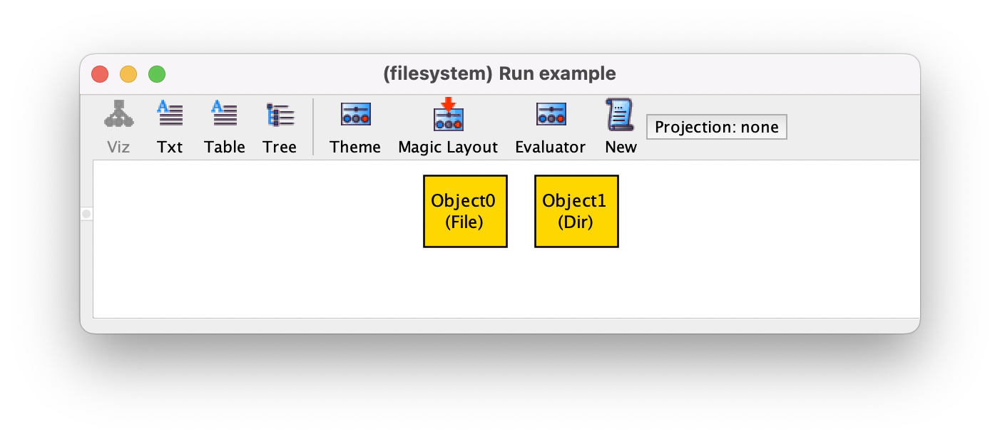
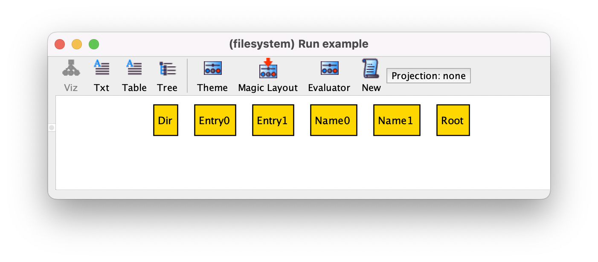
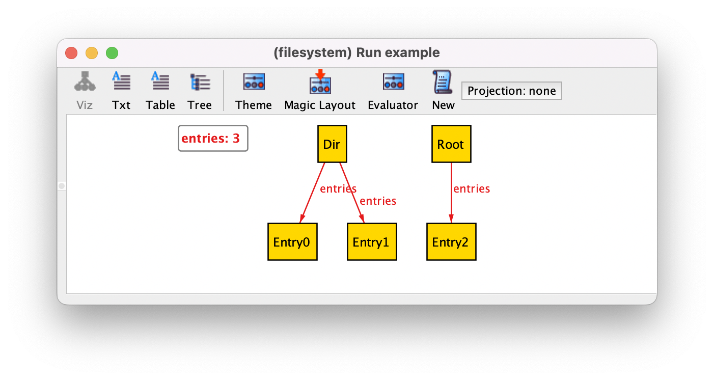
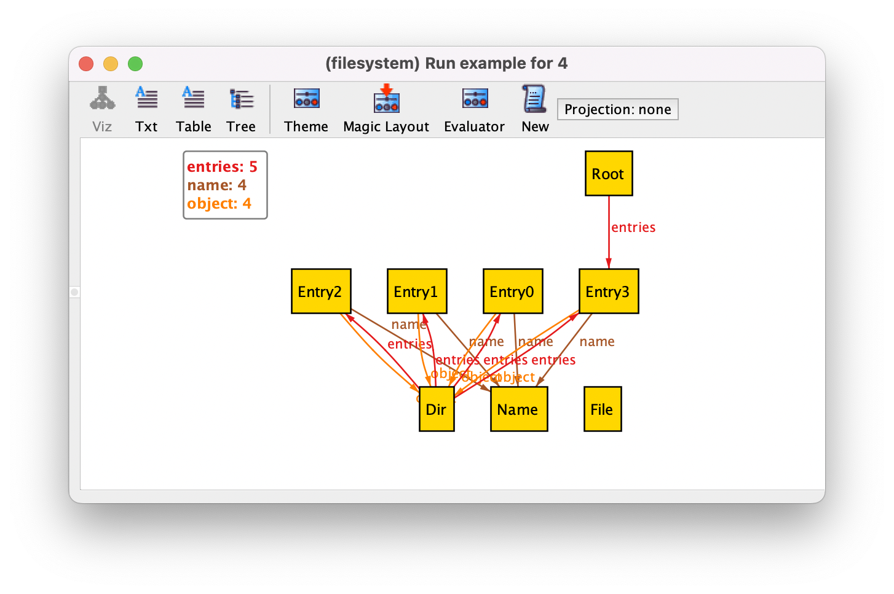
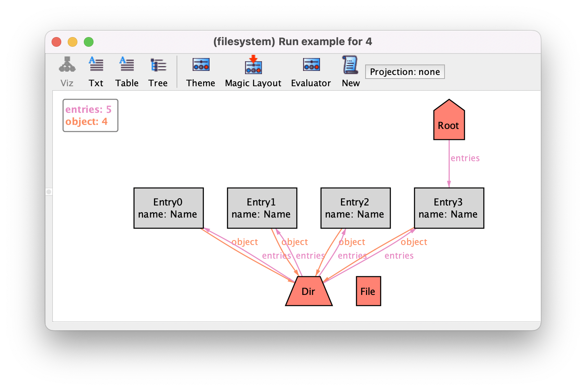
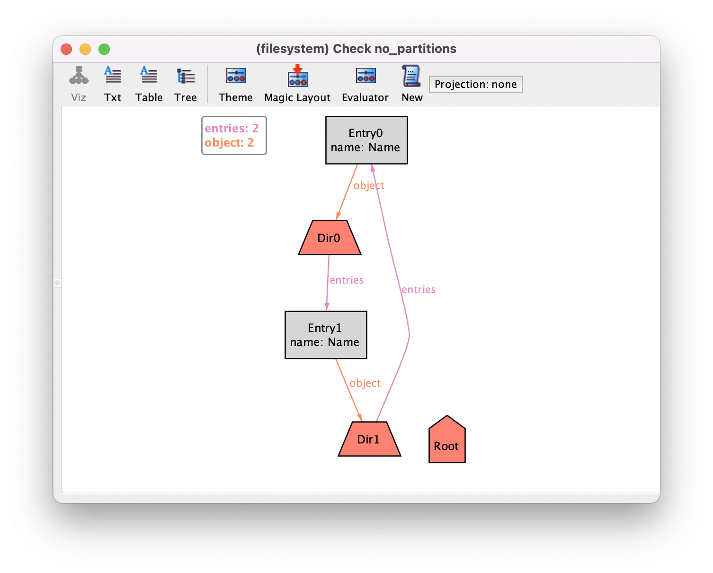

Structural modeling¶
This chapter explains how Alloy can be used for structural modeling. As running example we will explore the design of a file system. The main goal of the chapter is to introduce the key concepts of Alloy, so our model will be purposely simple, a very high-level abstraction of a real file system. We will focus only on the structural aspects of the design, namely on describing how files and directories are organized. Behavioral modeling will be the focus of the next chapter. Given the high level of abstraction, our specification will resemble a domain model, formally describing the key file system entities and their relationships. Another goal of this design exploration is to elicit the set of constraints that characterize a well-formed file system. Our final goal will be to verify that this set of constraints entails other relevant properties of a file system. In particular we are interested in verifying the property that no partitions occur in the file system, meaning that all files and directories are accessible from the root directory.
Signature declaration¶
In Alloy entities can be declared with signatures. A signature is just a set that groups together some elements of the domain of discourse.
In this case we will declare signatures to capture the two key entities in a file
system: directories and files.
Since both files and directories share some common
properties, namely they can both appear inside a directory, it is
convenient to declare them as subsets of a more abstract
signature containing all file system objects. To declare a signature we use the keyword
sig followed by the signature name and a list of field
declarations between braces. Such fields will later be used to represent associations or relationships between signatures. For the moment we will not declare
them, so a signature containing all file system objects without any field can be
declared simply as follows.
sig Object {}
To declare a subset signature, the keyword in should be used after the signature name, followed by the name of the including (or parent) signature. For example, the two subset signatures of Object containing the directories and files can be declared as follows.
sig Dir in Object {}
sig File in Object {}
In Alloy we typically start validating a design very early in the modeling process, when the specification is still quite incomplete. The goal is to find design problems or specification errors as early as possible, and not let them amass to a point where debugging becomes very difficult. This can be achieved by executing analysis commands.
A distinguishing feature of Alloy is that commands can be
included together with the declarations and constraints in a
model. This is very convenient because later all stakeholders can easily see which analysis were used to validate and verify a design.
There are two kinds of commands, both accepting an optional name and a formula enclosed in braces: run commands instruct the Analyzer to
check the satisfiability of the given formula,
yielding a satisfying instance if that is the case; check
commands instruct the Analyzer to check the validity of the given formula, yielding a counter-example
instance if that is not the case. An instance is just a valuation to all declared signatures and fields. In the case of signatures, this valuation defines which elements of the domain are contained in each signature. The elements of the domain are known in Alloy as atoms, because they have no intrinsic semantics, apart from the connections they establish with other atoms through relations.
The usual way to start validating a specification is to define an
empty run command. An empty formula is equivalent to true, and
for the moment such a command basically asks for any instance that conforms to the signature declarations. Later, as our model evolves, the instances returned by such an empty command will also be required to satisfy all the specified assumptions. If no instance is returned then the assumptions are inconsistent
and most likely our specification of the system is buggy and needs to
be corrected (for example by weakening some of the assumptions).
run example {}
To execute the first command in a specification, or to re-execute the
last command, just press cmd-e or the Execute
button in the toolbar of the Analyzer window. If you have multiple
commands, to choose which one to execute go to the
Execute menu and select the desired command. If the commands are
named you will see the names there, otherwise you will see an
automatically generated name composed by the type of command (run
or check) followed by a $ and a sequential numeric
identifier.
After executing a command, you’ll see some logging information in the pane to the right of the model editor. If a run command finds an instance, the Analyzer will report a message Instance found that can be clicked to open tha instance in the visualizer (likewise for check commands and counter-examples). Alternatively, you can press the Show button in the toolbar of the Analyzer window or select menu option (shortcut cmd-l) to view the last generated instance. After executing the example command in our model we
get the following message.
{kind=link}
After clicking Instance, the following instance is opened in the visualizer.
Another distinguishing feature of Alloy is that the instances returned by the analysis commands are, by default, depicted graphically as graph-like structures in a pop-up window, just as the one above: atoms belonging to the different signatures are nodes (depicted as boxes by default) and associations between atoms are edges (depicted as arrows). In this instance we have two objects, one of them is a directory and the other a file. We can ask the Analyzer to generate a different instance, by pressing New in the visualizer toolbar, or selecting menu option (shortcut cmd-n). As mentioned before, atoms have no intrinsic semantics. In particular, the names the Analyzer generates for them are meaningless: Object0 isn’t the name of a particular file existing in a real-world file system, but just a name to help us distinguish it from other elements in the domain. As such, two instances that only differ in the names of the atoms are in fact the same instance (they are isomorphic up to atom renaming), and showing both to the user would just encumber the understanding of the specification. To avoid this, and also to speed up analysis, the Analyzer implements a powerful symmetry breaking mechanism that excludes from the analysis most isomorphic (i.e., symmetric) instances. This feature is also very convenient for validation, as we can quickly see many truly different instances of our model. For example, after pressing New we could get the following instance. Re-enforcing the fact that name are meaningless, if there is a single atom in a signature it is not numbered in the visualization by default.
If you try to run these commands in the Analyzer it is possible that you get different instances. The Analyzer relies on lower-level SAT solvers to perform the analysis. Depending on the Analyzer version and the solver you have selected to perform the analysis, you might get instances in a different order than this. You can choose the underlying solver in the Options menu. However, irrespective of the selected solver, if you keep pressing New you will obtain all the possible (non-symmetric) instances of a specification, so you are guaranteed to eventually obtain these.
In the above instance we have a single object that is, simultaneously, a
directory and a file. Obviously this is not something we wanted, but
it is allowed by this model since both File and Dir are
arbitrary subsets of Object.
It is very common to require that some subset signatures are
disjoint. Alloy has a special syntax to declare those: instead of
in, the keyword extends should be used in the signature
declaration. An advantage of using extends is that in the instance visualizer
atoms will be named according to the most specific extension signature they
belong to (instead of using labels), which simplifies the understanding of instances. To introduce File and Dir as
two disjoint subsets of Object we should declare them as
follows.
sig File extends Object {}
sig Dir extends Object {}
File and Dir are extension signatures, while Object is a top-level signature, because it does not extend or is included in another signature.
If we re-execute the example command, and iterate through the possible
instances using New we will no longer see objects that
are simultaneously files and directories, but we will eventually get an instance
such as the following, where we have the problem of having an object (named Object)
that is neither a file nor a directory.
A frequent requirement for extension signatures is that they
actually form a partition of the parent signature, meaning that the parent signature must not contain atoms besides those
contained in its extensions. In this case, the parent signature should be declared as abstract, by
preceding its declaration with the keyword abstract. In our example we want File and Dir to partition
signature Object, so we should have the following declarations.
abstract sig Object {}
sig Dir extends Object {}
sig File extends Object {}
We would now like to denote one of the directories as the root of the file system. In Alloy it is not
possible to directly declare constants, but we can declare an extension signature that is inhabited by exactly one atom, and thus behaves like a constant.
Signature
declarations can be preceded by a multiplicity constraint that
restricts the cardinality of that signature. There are three
multiplicities that can be used in a signature declaration:
some forces the signature to always have some atoms;
lone restricts the signature to have at most one atom; and
one restricts the signature to have exactly one atom. To denote the root directory, we can declare a
signature Root extending Dir with multiplicity one.
one sig Root extends Dir {}
Root is a singleton set that contains the atom
that is the root directory of the file system. Since it is
declared with extends, that atom will also be named
Root in the instance visualizer. A possible instance returned
by the example command is the following, where we have three
directories, one of them being (necessarily, due to multiplicity one) the root directory.

Objects inside directories have an associated name, so we will need a
signature to represent the latter. In our file system model we will
also allow files to be (hard) linked, meaning that the same file can have
different names in different directories (or even inside the same
directory). As such, we will also introduce a signature Entry
that will later be used as a (kind of) record to pack together an
object inside a directory and the respective name.
sig Entry {}
sig Name {}
With these new signature declarations, a possible instance of our specification is the following, with two different names, two entries, one file, and two directories, one of which is the root.
To enable automatic analysis,
Alloy imposes a bound on the size of all signatures. This bound is
defined by a scope on commands. By default the scope is 3 for all
top-level signatures, meaning that instances will only be built using
at most 3 atoms for each top-level signature.
In our command this means that instances will have at most
3 names, 3 entries, and 3 objects. With this scope, instances with,
for example, 3 files, will not be possible, because the root always
exists and consumes 1 of the 3 atoms that can inhabit
Object. To change the default global scope for a certain command the keyword
for followed by the desired scope can be used. We can also
set a different scope for each top-level or extension signature (but not for the
subset signatures declared with in), by
using the keyword but followed by a comma separated list with
different scopes for each signature. You can also set an exact scope
for a signature with the keyword exactly, forcing that
signature to always be inhabited by the exact number of specified
atoms. For example, to execute the example command with a
default scope of 4 for top-level signatures, but up to 2 entries, and exactly 3 names, the
scope should be set as follows.
run example {} for 4 but 2 Entry, exactly 3 Name
Note that in this case, the only top-level signature that will be
subject to the default scope of 4 is Object, since specific
scopes are given for the other two top-level
signatures. Multiplicities on signature declarations also affect the
scope: for example, a signature with multiplicity one will
always have a scope of exactly 1, and an error will be thrown if you try to
set a different scope.
Alloy model
Download and explore the files relevant for the model at this point of the book.
Further reading
A signature can be declared as a subset of a union of signatures. Learn how this allows us to simulate multiple inheritance.
Further reading
Learn how to declare enumeration signatures with one sig extensions or with the keyword enum.
Further reading
Learn more about Alloy’s analysis commands and associated scopes.
Field declaration¶
Having declared our signatures we now proceed with the declaration of fields. Fields can be used to model associations or relationships between different entities in the domain. Fields are declared inside the braces of a signature declaration, and are essentially mathematical relations (sets of tuples) that connect atoms of the enclosing signature to other atoms (of the same or other signatures).
A field we will need in our example is one that connects each directory with the respective set
of entries. This binary relation, which will be named entries,
is a set of ordered pairs, where the first atom of each pair is a
directory and the second atom is an entry. Since it
relates atoms of signature Dir to atoms of signature
Entry, it must be declared as a field in the former
signature. To do so, we change the declaration of Dir as follows.
sig Dir extends Object {
entries : set Entry
}
As we can see, a field declaration consists of its name followed by a
colon and the target signature, optionally preceded be a multiplicity
declaration. In this case the target is signature Entry
and the multiplicity is set, meaning that one atom of
signature Dir can be related by entries to an
arbitrary number of atoms of signature Entry. The other
options for the multiplicity are the same that can be used in signature
declarations: one, lone, or some. If no
multiplicity is given, the default is one. In this book we
will avoid this implicit multiplicity in field declarations, and always
explicitly state the multiplicity of a field, even if it is
one.
Recall the already declared empty command example.
run example {}
By executing it, we could now get the following instance.
Binary relations are depicted by the Analyzer using labelled arrows: each
arrow is a pair contained in the relation, whose first atom is the
source of the arrow and whose second atom is the target. In this instance,
relation entries is a set that contains three pairs:
(Dir,Entry0), (Dir,Entry1), and
(Root,Entry2), meaning that we have a directory Dir
with two entries and the Root with one entry. Given the
set multiplicity we could also have
directories without any entries.
The arity of a relation is the size of the tuples
contained in it. For example, entries is a (binary) relation of arity 2.
Actually, in Alloy everything is a relation. In particular, signatures are also relations, namely (unary) relations of arity 1. This means they are sets of tuples of size 1. For example, in the previous instance, signature
Dir contains the following unary tuples: (Dir) and
(Root). Do not confuse the name of the atom
Dir with the signature name Dir: the former is just
an automatically-generated name for one of the two inhabitants of the latter! When we start using
relational logic operators to write constraints, it will be more
clear why the fact that everything denotes a relation considerably simplifies the syntax and
semantics of the language.
Besides entries we will declare two more fields in our
specification: name, that relates each entry
in a directory with the respective name; and
object, that relates each entry in a directory with the respective
file system object (either a file or a directory). Both these
fields will be declared inside signature Entry and both will
have multiplicity one, since exactly one target atom is
associated with each entry. With these two fields, an entry acts like a record that packs together an object inside a directory and the respective name.
sig Entry {
object : one Object,
name : one Name
}
Let’s change the default scope of our run command.
run example {} for 4
After executing this command we could get the following instance.
In this instance some problems with our specification are evident, for example entries shared between directories or files not belonging to any directory. As our specification grows, instances become increasingly difficult to understand. The Analyzer allows the visualization to be customized be defining a theme, which can make instances easier to understand. For our file system model, we will use different colours and shapes for entries and file system objects, and show entry names as attributes rather than edges. After the customization, the instance will be depicted as follows.
Alloy model
Download and explore the files relevant for the model at this point of the book.
Further reading
Learn in detail how to customize themes and how to get the above visualization.
Further reading
Instead of declaring entries, the association between directories, their contents, and the respective names could alternatively be modelled by a ternary relation.
Further reading
The Alloy Analyzer has an evaluator that can be very useful for debugging.
Specifying constraints¶
By inspecting the above instance we can easily detect several problems in our specification of a file system, namely it currently allows:
Shared entries between directories (entry
Entry3belongs both toDirandRoot).Different entries in the same directory with the same name (all entries inside
Dirhave the same nameName).The same directory to appear in more than one entry (
Diris the object of all entries).Dangling files that do not belong to any entry (
File).
To prevent these issues, we must add constraints to our model. In Alloy, constraints that are assumptions of the model (that is, necessarily valid) should be added inside a fact. A fact is declared with keyword fact followed by an optional name and a set of constraints inside braces.
To specify constraints Alloy has a dual syntax for the usual Boolean operators: they can be both written
with the typical programming language style operators, but also using the
respective English words. We have ! or not for negation,
&& or and for conjunction, || or or for
disjunction, => or implies for implication, and <=>
or iff for equivalence. Alloy syntax was designed to be very clean
and readable. The use of the English version of the operators further
increases the readability of the specifications, and will be the preferred
style in this book. The universal and existential quantifiers of first-logic logic can also be used, and are written with keywords all and some. Quantified variables can range over arbitrary sets, and a single quantifier can introduce multiple variables at once, separated by commas. To separate the quantified variables from the (open) formula that they should satisfy the separator | should be used (or brackets for a block of constraints).
Actually, in Alloy properties can be specified with an extension of first-order logic called
relational logic.
Relational logic extends first-order logic with so
called relational operators, that can be used to combine (or
compose) relations (which in first-order logic are known as
predicates) to obtain more complex relations. Among these operators we have the classic set operators such as
intersection (&), union (+), and difference
(-). Notice that every relation (of any arity) is a set of tuples, so
these can be applied to any relation, including fields and signatures. A typical atomic formula in relational logic is a cardinality check: keyword no checks if a relation is empty; some checks if it is non-empty; lone checks if it has at most one tuple; and one checks if it has exactly one tuple. We can check that a relation is a subset or equal to another relation with keyword in. To check the negation of this we can directly use the operator not in. Finally, equality can be checked with = and inequality with !=. For example, the following fact restrict_object states that all objects are either directories or files, by specifying that signature Object is a subset of the union of Dir and File.
fact restrict_object {
Object in Dir + File
}
Using plain first-order logic, this fact would have to be written with a more verbose style using quantifiers and Boolean operators.
fact restrict_object {
all x : Object | x in Dir or x in File
}
Of course, this fact is redundant, since it is a consequence of signature Object being abstract and extended by Dir and File. However, it illustrates an important point about Alloy’s motto that “everything is a relation”. In Alloy, the operator in is the standard subset or equal operator of set theory and not the membership test. A formula like x in Dir is allowed, because in Alloy every expression denotes a relation (a set of tuples). In particular, quantified variables are also relations, namely singleton sets with a unary tuple containing a single atom drawn from the range of the quantifier. When x is such a singleton set, an inclusion check like x in Dir actually performs a membership check. This is an example of how the above motto enables the simplification of the syntax and semantics of the language, since there is no need for a different operator for membership check.
The essential operator in relational logic is composition, the
binary operator written as . (also known as dot-join). This operator allows us to
navigate through fields to obtain related atoms. Understanding
how this operator works is key to be proficient in Alloy. Here, we
will explain its informal semantics by means of several examples. In particular we will focus on the simplest,
and most frequent, use of this operator, namely when applied to a
set and a binary relation. For example, suppose e is a singleton set containing an Entry and d a
singleton set containing a Dir. These could be, for example,
quantified variables. To obtain the name of entry e you can compose it with
relation name: relational expression e.name denotes
the name of e. Since name is a field
with multiplicity one, the result of this composition is
necessarily a singleton set containing a Name. Similarly, e.object is the
singleton set with the file system object that is contained in entry
e.
The notation is, on purpose, similar to that of accessing an attribute
of an object in an object-oriented programming language, as the effect
is essentially the same when dealing with singleton sets. However, we
can also apply it to relations with multiplicity different than
one and arbitrary sets. For example, d.entries
retrieves the set of all entries in directory d. This set can
be empty or contain an arbitrary number of entries, since relation
entries has multiplicity set. Another interesting usage
is when composing a non-singleton set with a relation. For example,
Entry.name is the set of all names of all entries and
Dir.entries is the set of all entries that belong to some
directory. Also, you are not forced to compose a set followed by a
relation: the other way around also works. Relations can be navigated
forwards, from the source signature to the target signature, but also
backwards from the target signature to the source one. For example,
entries.e denotes the set of directories that contain entry
e: this set can be empty, if e is not contained in any
directory, or even have more than one directory, since when declaring
a field there are no multiplicity restrictions imposed on the source
signature. We can also compose with an arbitrary set on the right-hand
side: for example, entries.Entry is the set of all directories
that contain some entry.
Compositions can also be chained to obtain atoms that are somehow
indirectly related. For example, d.entries.object denotes the
set of all file system objects that are contained in some entry of
directory d. And again, it is possible to navigate backwards
through a chain of compositions. For example, entries.object.d
denotes the set of all directories that have some entry that points to directory
d.
Using . we can now declare a fact that prevents the first
issue identified in the beginning of this section. We can almost directly transliterate the
natural language requirement that “entries cannot be shared between directories” to relational logic. Given any two
different directories x and y, the property that there
should be no common entries between both can be specified as no (x.entries & y.entries). In this formula we first determine the intersection of the two
sets of entries of both directories, and then we check that this set
is empty using the keyword no. To finish the specification of our first assumption we just need to universally quantify over all different
directories x and y.
fact no_shared_entries {
// Entries cannot be shared between directories
all x, y : Dir | x != y implies no (x.entries & y.entries)
}
The need to quantify over two or more different variables is very
common, so Alloy provides the modifier disj, that can be added
between a quantifier and the variables, precisely to restrict those
variables to be different. This modifier simplifies the formulas,
since we no longer need an implication to indirectly restrict the
range of the quantification. Using this modifier, our property can be
restated as follows.
fact no_shared_entries {
// Entries cannot be shared between directories
all disj x, y : Dir | no (x.entries & y.entries)
}
As expected, there are many different ways to specify the same
property. In the case of this property, a simpler formula can be obtained by navigating
backwards the entries relation, and specifying instead that
for every entry e there should be at most one directory in the
set entries.e, the set of all directories that contain
e as an entry. This alternative formulation would look as
follows. Recall that lone can be used to check if a relation (or set)
contains at most one tuple.
fact no_shared_entries {
// Entries cannot be shared between directories
all e : Entry | lone entries.e
}
To fix the second identified issue, we must enforce that different entries in the same directory have different names. This can be achieved with the following fact.
fact unique_names {
// Different entries in the same directory must have different names
all d : Dir, disj x, y : d.entries | x.name != y.name
}
Here you can see another nice feature of Alloy’s syntax: it is
possible to quantify over any expression and not only over
signatures. In this case, x and y will be instantiated
with all the (distinct) atoms belonging to d.entries, the set
of entries of each directory d quantified in the outer formula. An alternative formulation of
this property is the following.
fact unique_names {
// Different entries in the same directory must have different names
all d : Dir, n : Name | lone (d.entries & name.n)
}
Expression d.entries & name.n denotes the set of entries in
directory d that also have name n. This set must
contain at most one entry for every directory d and name
n.
To prevent the third issue we can enforce that each directory is contained in at most one entry as follows.
fact no_shared_dirs {
// A directory cannot be contained in more than one entry
all d : Dir | lone object.d
}
The last issue is a an example of a broader problem: there is nothing in our
specification that forces all objects except the root to belong to an entry. To
specify such a constraint, we can begin by determining the set of all objects
that are contained in any entry using expression Entry.object, and then
enforce that this set is equal the set of all objects minus the root.
fact no_dangling_objects {
// Every object except the root is contained in some entry
Entry.object = Object - Root
}
After adding these four facts, if we re-execute the example command and
iterate with New, we’ll notice that the problems identified above
seem to be gone. However, we will still get instances such as the following.
This instance makes clear two additional issues in our model (the second was actually already present in the previous problematic instance):
Entries not belonging to any directory.
Directories contained in themselves.
To address the first issue we could replace the fact
no_shared_entries introduced above with a stronger version to
demand that every entry belongs to one and exactly one directory (rather
than at most one).
fact one_directory_per_entry {
// Entries must belong to exactly one a directory
all e : Entry | one entries.e
}
Concerning the second issue, to forbid directories from
containing themselves as entries, we can use the previously described
expression d.entries.object to determine the objects
contained in a directory d. Then we just need to forbid
d itself from being a member of this set.
fact no_self_containment {
// Directories cannot contain themselves
all d : Dir | d not in d.entries.object
}
Re-executing again command example and iterating a couple of
times with New reveals no more issues. Obviously, it is
impossible to manually inspect all possible instances, so we will
proceed with the verification of our desired assertion, namely that
the file system contains no partitions.
Alloy model
Download and explore the files relevant for the model at this point of the book.
Further reading
Alloy has a special syntax to impose multiplicity constraints in both ends of binary relations. Learn about the full bestiary of binary relations we can get by varying these multiplicities.
Further reading
Alloy has a nice type system that helps detecting many mistakes while specifying properties.
Further reading
Modules can help you break a big specification into separate, reusable specifications. Learn about the module system of Alloy.
Further reading
ordering moduleAlloy has a pre-defined module that can be used to impose a total order in a signature. This could be used, for example, to model the creation timestamps of entries in a file-system.
A question of style¶
Relational logic, the formalism behind the Alloy language, is very expressive and flexible. This means that the same constraint can be encoded in several different styles, depending on the user’s preference.
Let us get back to the fact no_shared_entries, forcing
that entries cannot be shared between directories. The last version presented above was the
following.
fact no_shared_entries {
// Entries cannot be shared between directories
all e : Entry | lone entries.e
}
This navigational style is the most common in Alloy. We usually have a few
quantifiers (many times just a single quantified variable) and use composition
to navigate back and forwards from variables to get related sets of atoms, over
which some constraints are imposed. In this case we first determine the set
entries.e containing the directories where entry e is contained,
and then force this set to contain at most one directory with a cardinality check.
Of course, we could also express the same property using a plain first-order style, where we only check if a tuple of variables belongs to a relation (known as a predicate in first-order logic parlance) or if a pair of variables are equal. This requires having more quantified variables and results in a verbose style that is also known as pointwise.
fact no_shared_entries {
// Entries cannot be shared between directories
all x, y : Dir, e : Entry | x->e in entries and y->e in entries implies x = y
}
The -> operator is the Cartesian product, here being applied to two
singleton sets (two variables) to form a singleton binary relation (with a single tuple).
Checking that this singleton binary relation is a subset of entries is
just checking the membership of the respective tuple.
Going full first-order style usually results in very verbose constraints. So
even when going for a pointwise style, it is still common to rely on the set
operators of relational logic to obtain a more succinct formula. That was the
case of the first version of the no_shared_entries fact we presented
above.
fact no_shared_entries {
// Entries cannot be shared between directories
all x, y : Dir | x != y implies no (x.entries & y.entries)
}
In Alloy, sometimes we can also go in the opposite direction and use a very succinct, purely relational style, where no quantifiers are used. This style is sometimes known as pointfree due to the lack of variables. The above restriction could be specified in this style as follows.
fact no_shared_entries {
// Entries cannot be shared between directories
entries.~entries in iden
}
The iden predefined binary identity relation contains all possible
tuples of identical atoms. The unary operator ~ reverses a binary
relation, so ~entries is a relation from entries to the directories
containing it. The expression entries.~entries is thus a binary relation
that associates a directory with all directories that contain at least a shared
entry. By restricting this derived relation to be a subset of iden we
are indirectly forbidding shared entries between directories. It is a nice
intellectual challenge to write specifications in this pointfree style, but
sometimes we end up with formulas such as this one that are very difficult to
understand, when compared to the equivalent formula specified in the typical
navigational style of Alloy. Also, be aware that it is not possible to convert
all formulas of relational logic to this style in Alloy.
Alloy model
Download and explore the files relevant for the model at this point of the book.
Further reading
To start using a more pointfree style you first should know all operators in Alloy’s relational logic.
Further reading
Learn how relational logic formulas can be checked with a model finding procedure implemented with off-the-shelf SAT solvers.
Verifying assertions¶
In Alloy, check commands are used to verify properties that are expected to be a consequence of the specified facts. Although such commands can be declared to verify any arbitrary formula (must like the body of run commands), assertions that are expected to hold are better declared inside a named assert block to improve code maintainability.
To specify the expected assertion in our example, namely that there are no partitions in a file system, we need to determine the set of all objects
that are reachable from the root. We have already seen how to
determine the set of objects that are directly contained in a
directory. Namely, Root.entries.object is the set of objects
directly contained in the Root directory. The set of objects
reachable from Root contains not only these, but also the
objects that they contain, which can be determined as
Root.entries.object.entries.object
Of course, we also need to include the objects contained in these, and so on, and so on. Essentially, we would like to determine the following set:
Root.entries.object +
Root.entries.object.entries.object +
Root.entries.object.entries.object.entries.object +
…
The problem is how to fill in the … in this expression:
ultimately the number of times we need to compose
entries.object depends on the size of our file system, and we
would like our specification to be independent of this
value. Fortunately, relational logic includes the so-called transitive
closure operator (^) that when applied to a binary relation
determines the binary relation that results
from taking the union of all its possible compositions. Essentially,
given a relation r, ^r is the same as r + r.r +
r.r.r + …. Seeing our instances as labelled graphs, the expression
x.^r will determine the set of all atoms that can be reached
from atom x by navigating in one or more steps via arrows
labelled with r. Transitive closure is the reason why
relational logic is strictly more expressive than first-order logic:
our desired assertion could not be expressed in first-order logic
alone.
By using transitive closure applied to relation
entries.object we can determine the set of all objects
reachable from root, its descendants.
Alloy allows the declaration of functions, reusable (parametrized) expressions. To declare a function the keyword fun should be used,
followed by the function name, an optional list of
parameters, a colon followed by the type of the returned relation, and the expression used to compute it enclosed between braces.
This expression can be specified using any of the relational operators presented so far. For example, we could declare a function descendants that returns the set of all objects reachable from a given object as follows.
fun descendants [o : Object] : set Object {
o.^(entries.object)
}
In this definition we could also use a let expression to name the derived relation entries.object. Let expressions are particularly useful if the named expression is used more than once in the following expression, thus avoiding repetition, but here we could use it just to make the definition more clear.
fun descendants [o : Object] : set Object {
let children = entries.object | o.^children
}
Besides functions Alloy also allows the declaration of predicates, reusable formulas that are only required to hold when invoked (for example in a fact). To declare a predicate the keyword pred should be used, followed by the predicate name, an optional list of parameters, and a formula enclosed between braces. For example, we could declare a predicate reachable that checks if an object is reachable from the root as follows
pred reachable [o : Object] {
o in Root + descendants[Root]
}
A reachable object is either the root itself or one of its descendants. To compute the latter we use function descendants defined above.
To ensure that there are no partitions, all objects of the file system should be reachable from the root. Using the above predicate, this desired assertion can be specified as follows.
assert no_partitions {
// Every object is reachable from the root
all o : Object | reachable[o]
}
To verify that this assertion is a consequence of all the facts that
have been imposed before, we can use a check command.
check no_partitions
Unfortunately, executing this command reveals a counter-example.
The problem is that we have two directories that contain each
other. Fortunately, this counter-example is not an issue in real file
systems, but exposes a problem in our specification. One of the facts
specified above, no_self_containment, imposed that no directory can contain itself, but of course this
alone is not sufficient: a directory cannot be one of its own descendants. To fix that fact, we can again use function descendants.
fact no_indirect_containment {
// Directories cannot descend from themselves
all d : Dir | d not in descendants[d]
}
Re-executing the check command no longer yields
counter-examples, reporting a message such as the following.

Note that the Analyzer only reports that no counter-example was found, so the assertion may be valid, since with the bounded analysis performed by the Analyzer we can never be entirely sure that an assertion is valid. Nonetheless, we can always set a higher scope in the command to increase our confidence that that is indeed the case.
check no_partitions for 6
You should always be wary of the results of checking your
assertions, in particular when they yield no
counter-examples. Recall that a check command verifies that
an assertion is implied by the conjunction of all declared
facts. If your facts are inconsistent, in the sense that their
conjunction is false, or admit only very trivial instances (for
example empty ones), your assertion can be trivially true. For
example, in this example we changed one of the facts before our
final check that yielded no counter-examples. We should have
checked that this change did not accidentally make our
specification inconsistent. To do so we could execute a run
command after the final check, and iterate a bit through the
returned instances to make sure the specification is still
consistent and admits non-trivial file systems.
Alloy model
Download and explore the files relevant for the model at this point of the book.
Further reading
Just pressing New is not the ideal method to validate a specification. Learn how to define run commands
that behave like unit tests that directly search for specific
instances.
Further reading
Transitive closure is very powerful but some properties require a recursive definition that cannot be defined with closure. Learn how to specify such recursive definitions in Alloy.
Further reading
Alloy has a predefined integer type which can be handy so model some quantitative constraints.